Approved identity / south idle
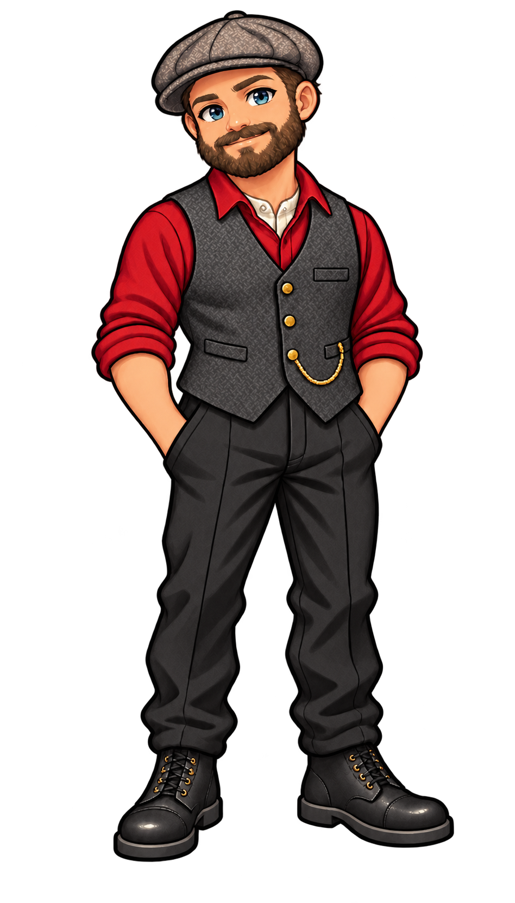
Approved anime v2. This does not approve new poses.
Tier 2: standing_hands_hips_east
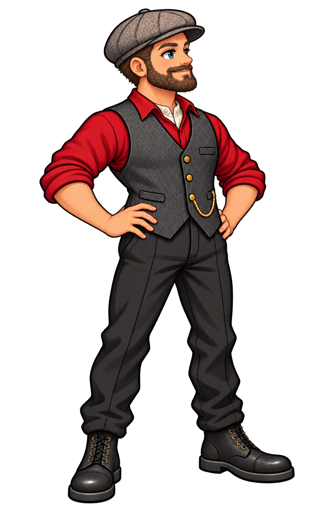
chris_standing_hands_hips_east_confident.png
[985, 1596] · alpha [0, 255] · height 1540 / 1564 · approved
Artwork approved; original pixels preserved. Shared canvas/pivot alignment and furniture/runtime fit remain unverified.
Tier 2: standing_hands_hips_north
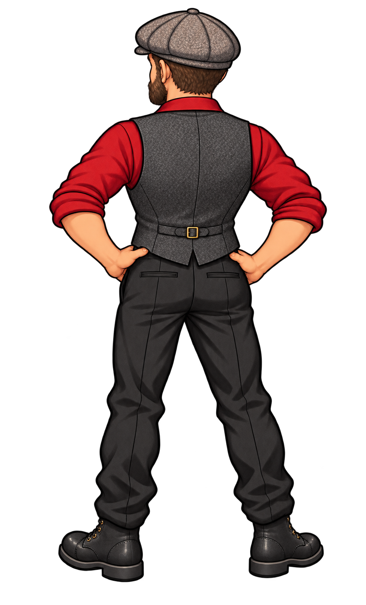
chris_standing_hands_hips_north_confident.png
[976, 1612] · alpha [0, 255] · height 1530 / 1564 · approved
Artwork approved; original pixels preserved. Shared canvas/pivot alignment and furniture/runtime fit remain unverified.
Tier 2: standing_hands_hips_south
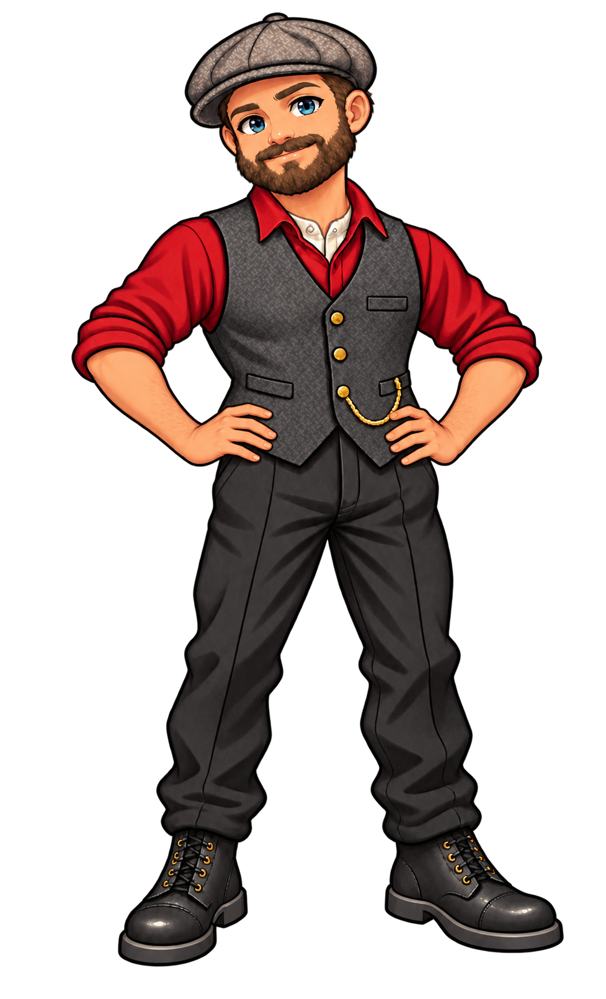
chris_standing_hands_hips_south_confident.png
[977, 1610] · alpha [0, 255] · height 1538 / 1564 · approved
Artwork approved; original pixels preserved. Shared canvas/pivot alignment and furniture/runtime fit remain unverified.
Tier 2: standing_hands_hips_west
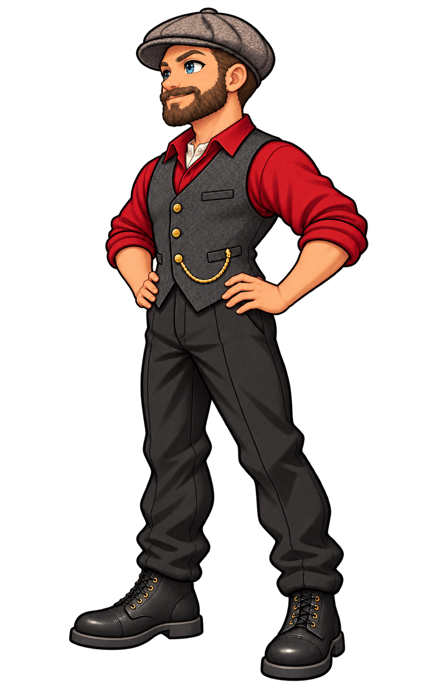
chris_standing_hands_hips_west_confident.png
[985, 1596] · alpha [0, 255] · height 1553 / 1564 · approved
Artwork approved; original pixels preserved. Shared canvas/pivot alignment and furniture/runtime fit remain unverified.
Tier 2: standing_think_east
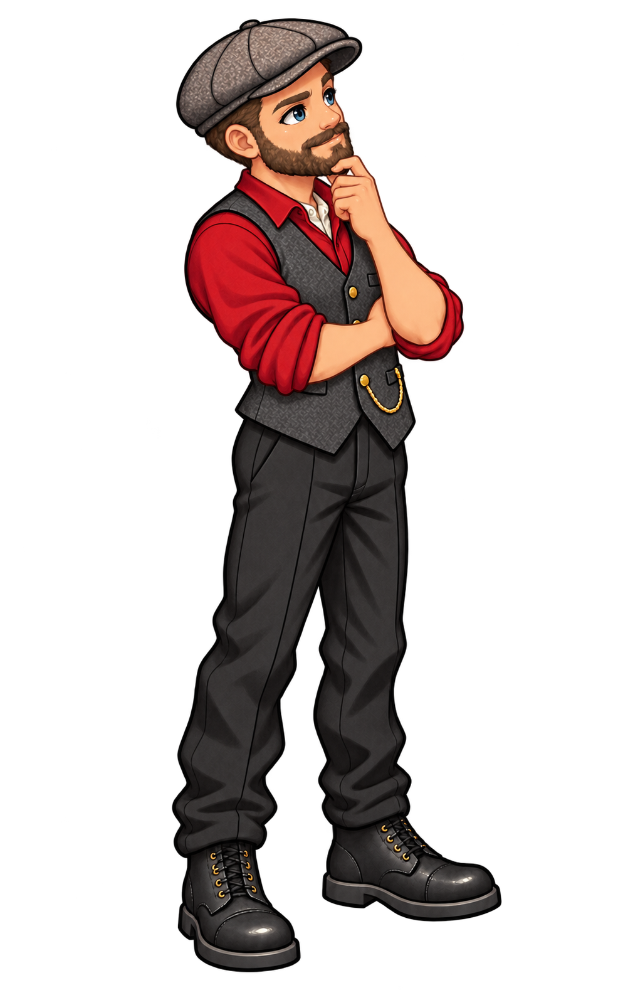
chris_standing_think_east_curious.png
[986, 1594] · alpha [0, 255] · height 1521 / 1564 · approved
Artwork approved; original pixels preserved. Shared canvas/pivot alignment and furniture/runtime fit remain unverified.
Tier 2: standing_think_north
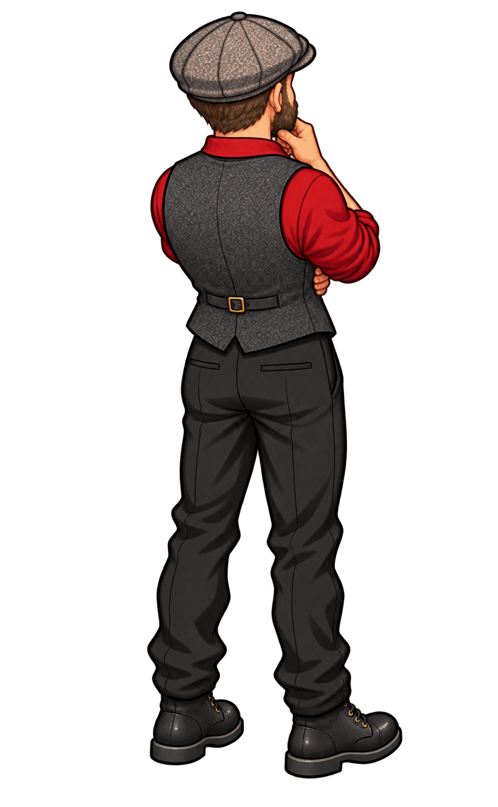
chris_standing_think_north_curious.png
[985, 1596] · alpha [0, 255] · height 1517 / 1564 · approved
Artwork approved; original pixels preserved. Shared canvas/pivot alignment and furniture/runtime fit remain unverified.
Tier 2: standing_think_south
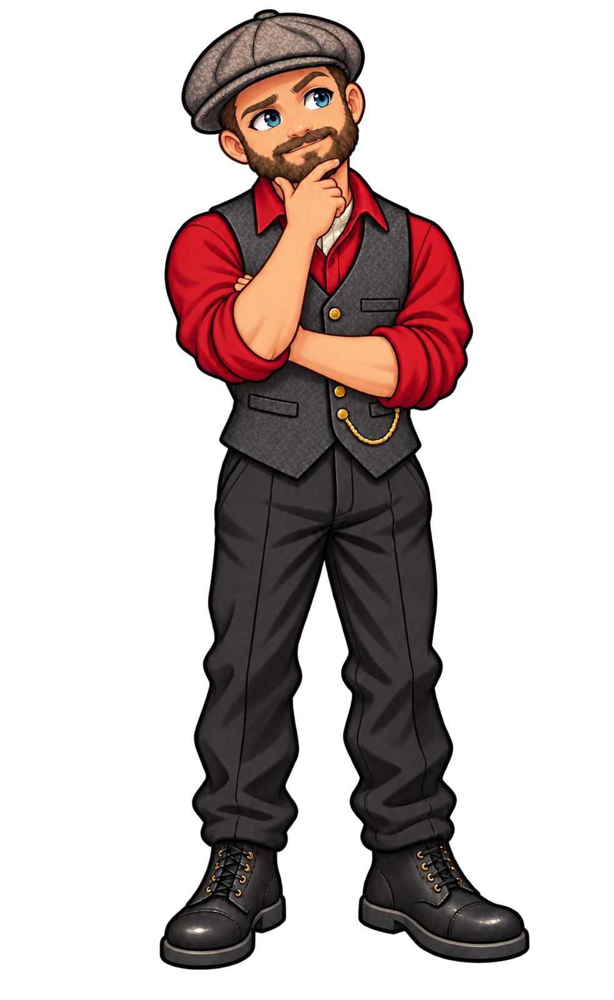
chris_standing_think_south_curious.png
[983, 1600] · alpha [0, 255] · height 1536 / 1564 · approved
Artwork approved; original pixels preserved. Shared canvas/pivot alignment and furniture/runtime fit remain unverified.
Tier 2: standing_think_west
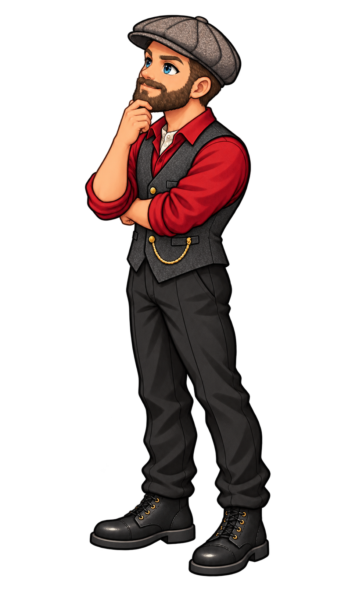
chris_standing_think_west_curious.png
[977, 1610] · alpha [0, 255] · height 1524 / 1564 · approved
Artwork approved; original pixels preserved. Shared canvas/pivot alignment and furniture/runtime fit remain unverified.
Tier 2: standing_withdraw_east
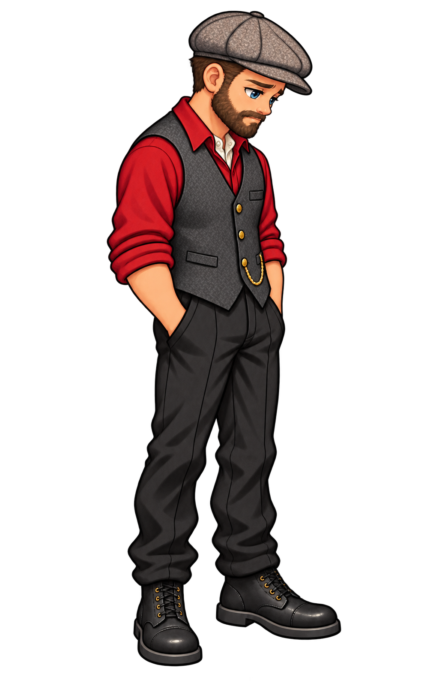
chris_standing_withdraw_east_sad.png
[983, 1600] · alpha [0, 255] · height 1529 / 1564 · approved
Artwork approved; original pixels preserved. Shared canvas/pivot alignment and furniture/runtime fit remain unverified.
Tier 2: standing_withdraw_south
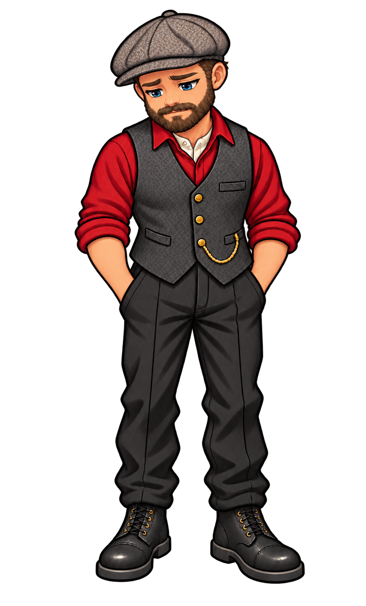
chris_standing_withdraw_south_sad.png
[976, 1612] · alpha [0, 255] · height 1527 / 1564 · approved
Artwork approved; original pixels preserved. Shared canvas/pivot alignment and furniture/runtime fit remain unverified.
Tier 2: standing_withdraw_west
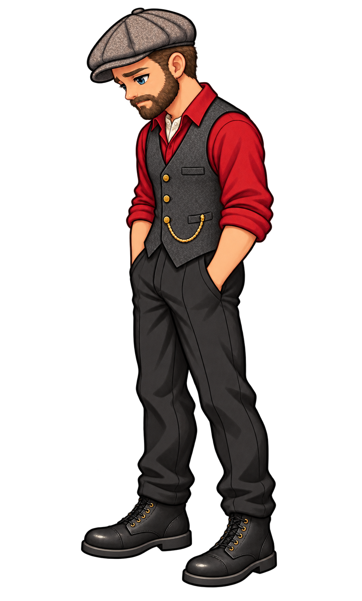
chris_standing_withdraw_west_sad.png
[974, 1615] · alpha [0, 255] · height 1557 / 1564 · approved
Artwork approved; original pixels preserved. Shared canvas/pivot alignment and furniture/runtime fit remain unverified.
Tier 3: kneeling_reach_east
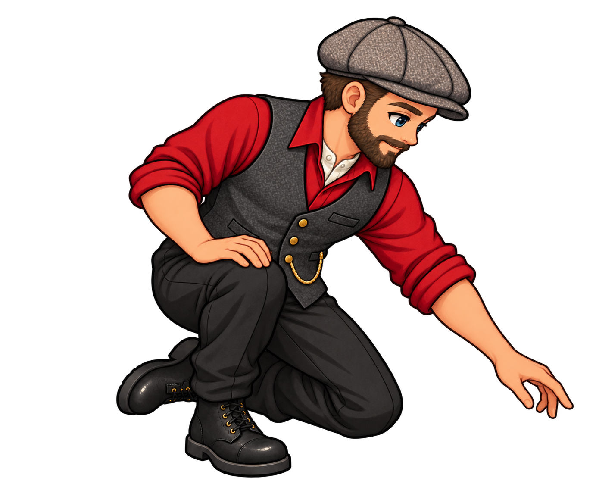
chris_kneeling_reach_east_neutral.png
[1383, 1137] · alpha [0, 255] · height 1070 / 1564 · approved
Artwork approved; original pixels preserved. Shared canvas/pivot alignment and furniture/runtime fit remain unverified.
Tier 3: kneeling_reach_south
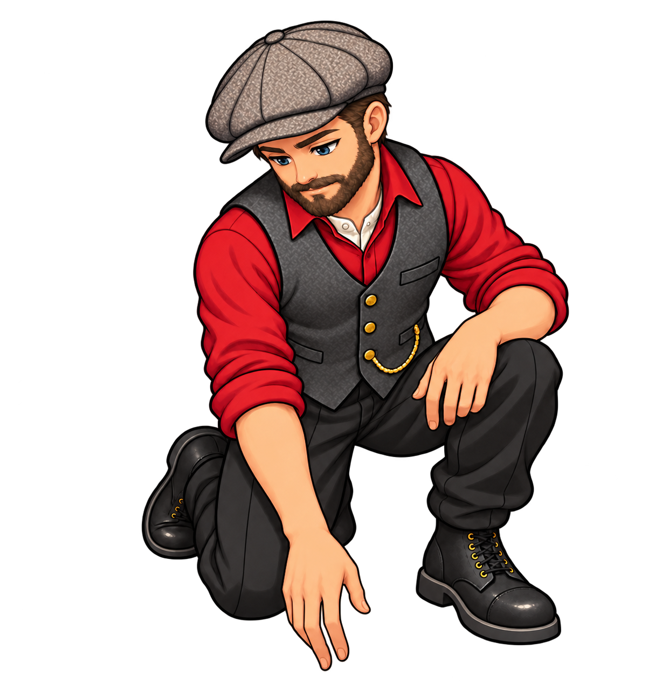
chris_kneeling_reach_south_neutral.png
[1215, 1295] · alpha [0, 255] · height 1207 / 1564 · approved
Artwork approved; original pixels preserved. Shared canvas/pivot alignment and furniture/runtime fit remain unverified.
Tier 3: kneeling_reach_west
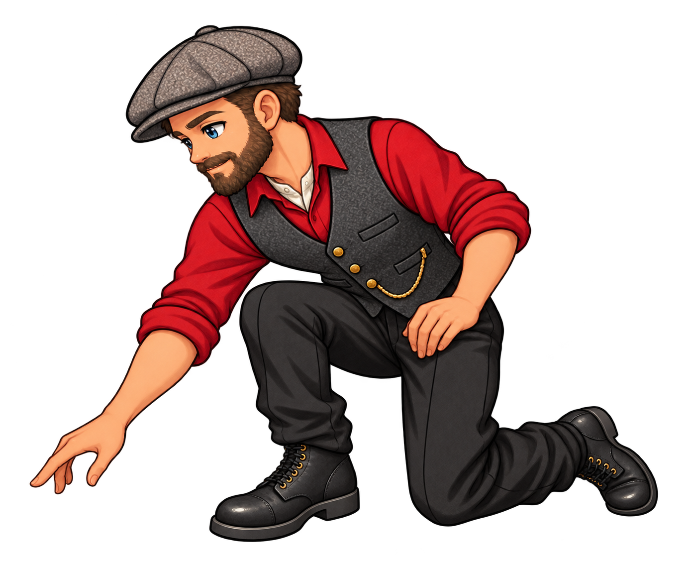
chris_kneeling_reach_west_neutral.png
[1383, 1137] · alpha [0, 255] · height 1038 / 1564 · approved
Artwork approved; original pixels preserved. Shared canvas/pivot alignment and furniture/runtime fit remain unverified.
Tier 3: lying_idle_north_south_head_north
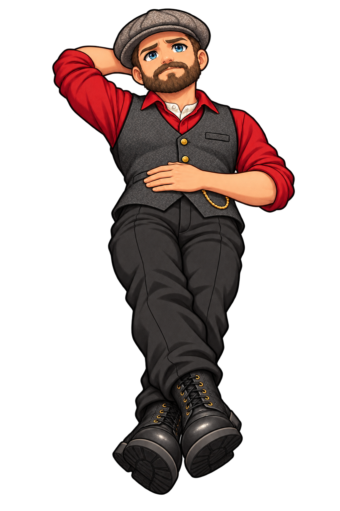
chris_lying_idle_north_south_head_north_awake.png
[1024, 1536] · alpha [0, 254] · height 1461 / 1564 · approved
Artwork approved; original pixels preserved. Shared canvas/pivot alignment and furniture/runtime fit remain unverified.
Tier 3: lying_lounge_north_south_head_north
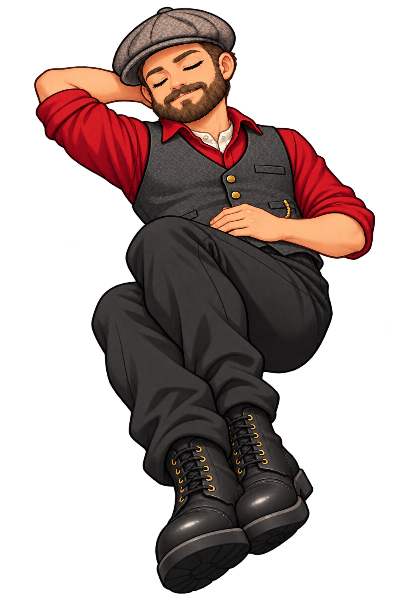
chris_lying_lounge_north_south_head_north_napping.png
[1024, 1536] · alpha [0, 254] · height 1468 / 1564 · approved
Artwork approved; original pixels preserved. Shared canvas/pivot alignment and furniture/runtime fit remain unverified.
Tier 3: lying_sleep_east_west_head_east
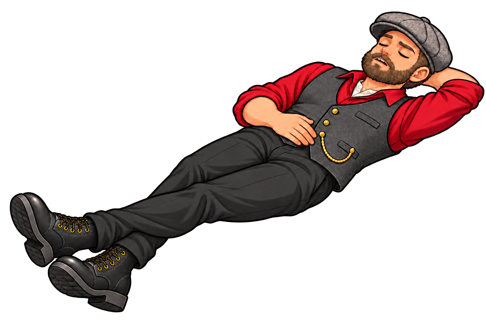
chris_lying_sleep_east_west_head_east_peaceful.png
[1536, 1024] · alpha [0, 254] · height 954 / 1564 · approved
Artwork approved; original pixels preserved. Shared canvas/pivot alignment and furniture/runtime fit remain unverified.
Tier 3: lying_sleep_east_west_head_west
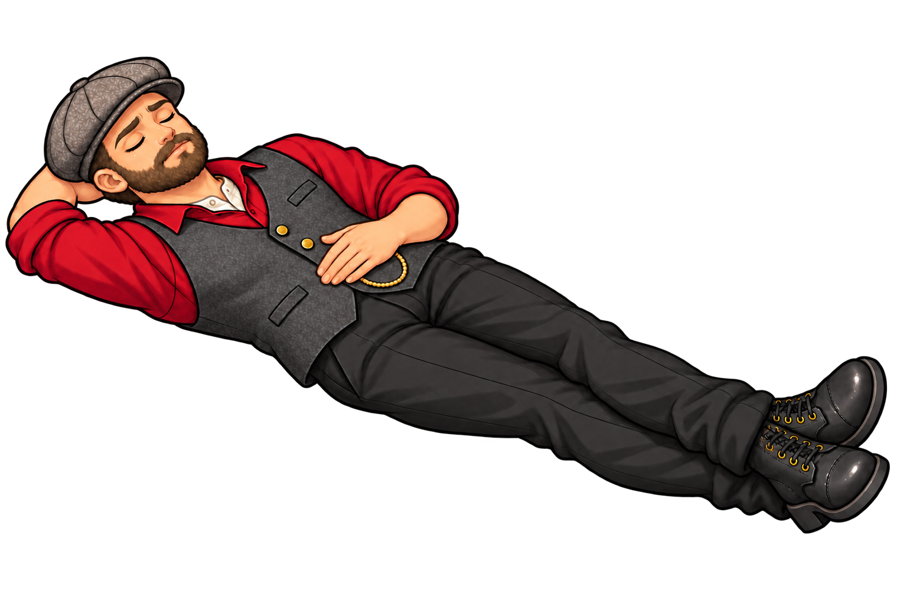
chris_lying_sleep_east_west_head_west_peaceful.png
[1536, 1024] · alpha [0, 254] · height 808 / 1564 · approved
Artwork approved; original pixels preserved. Shared canvas/pivot alignment and furniture/runtime fit remain unverified.
Tier 3: lying_sleep_north_south_head_north
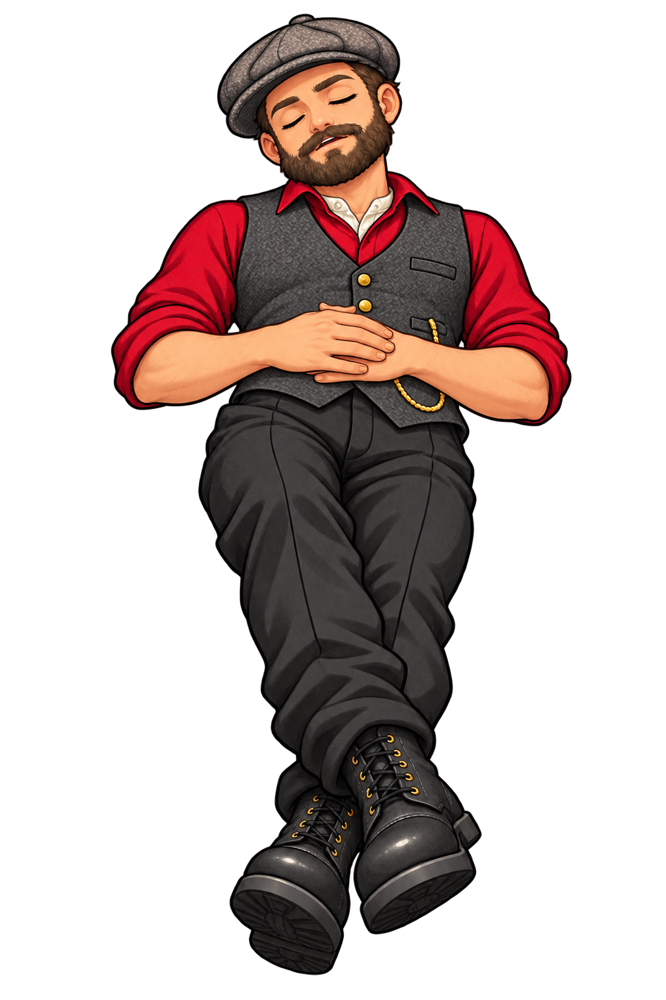
chris_lying_sleep_north_south_head_north_peaceful.png
[1024, 1536] · alpha [0, 254] · height 1477 / 1564 · approved
Artwork approved; original pixels preserved. Shared canvas/pivot alignment and furniture/runtime fit remain unverified.
Tier 3: seated_idle_north
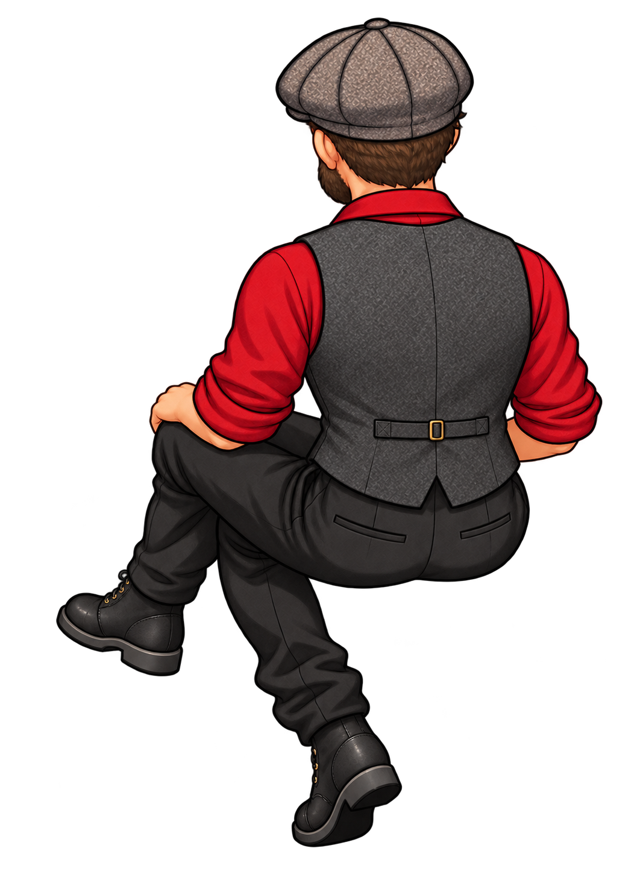
chris_seated_idle_north_neutral.png
[1067, 1475] · alpha [0, 255] · height 1377 / 1564 · approved
Artwork approved; original pixels preserved. Shared canvas/pivot alignment and furniture/runtime fit remain unverified.
Tier 3: seated_idle_south
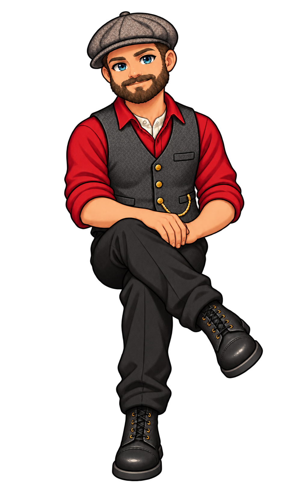
chris_seated_idle_south_neutral.png
[948, 1659] · alpha [0, 255] · height 1563 / 1564 · approved
Artwork approved; original pixels preserved. Shared canvas/pivot alignment and furniture/runtime fit remain unverified.
Tier 3: seated_read_south
chris_seated_read_south_neutral.png
[1080, 1456] · alpha [0, 255] · height 1393 / 1564 · approved
Artwork approved; original pixels preserved. Shared canvas/pivot alignment and furniture/runtime fit remain unverified.
Tier 3: lying_idle_east_west_head_east
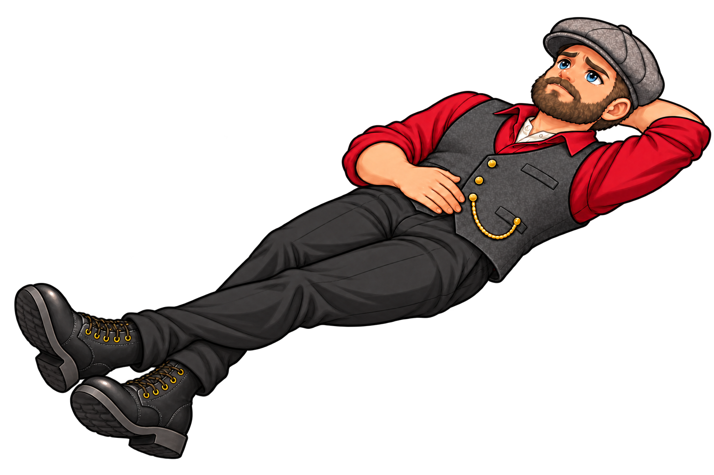
chris_lying_idle_east_west_head_east_awake.png
[1536, 1024] · alpha [0, 254] · height 953 / 1564 · approved
Exact user-attached head-east selection approved. Preserve original pixels; no more leg redraws. Alpha maximum254 and export alignment/edge clearance/runtime fit remain separate technical checks.
Tier 3: lying_idle_east_west_head_west
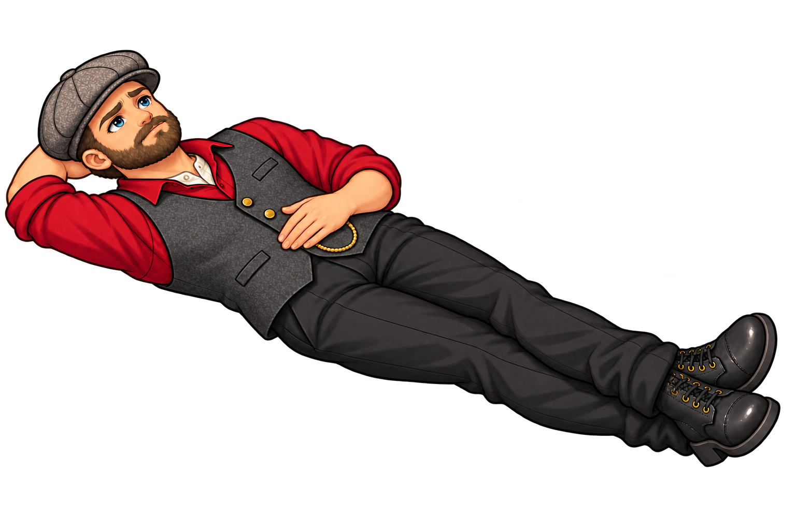
chris_lying_idle_east_west_head_west_awake.png
[1536, 1024] · alpha [0, 254] · height 806 / 1564 · approved
Exact user-attached head-west selection approved. Preserve original pixels; no more leg redraws. Alpha maximum254 and export alignment/edge clearance/runtime fit remain separate technical checks.
Tier 3: standing_read_north
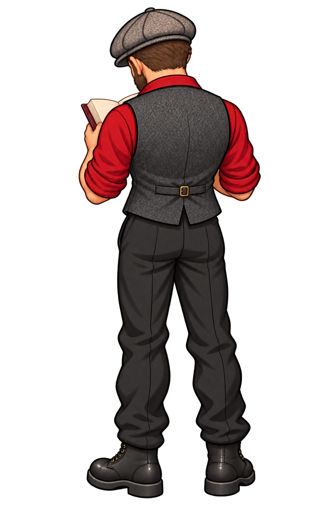
chris_standing_read_north_neutral.png
[1015, 1550] · alpha [0, 255] · height 1501 / 1564 · approved
North actual back, bowed head, open cream pages peek above left shoulder facing reader and camera correctly. Full cap/heels. Height1501px is4.03percent below1564 reference, about1px below automatic4percent threshold; retained for visual review, export scale adjustment pending. Not technically cleared for export. Furniture and runtime fit unverified.
Tier 3: standing_read_west
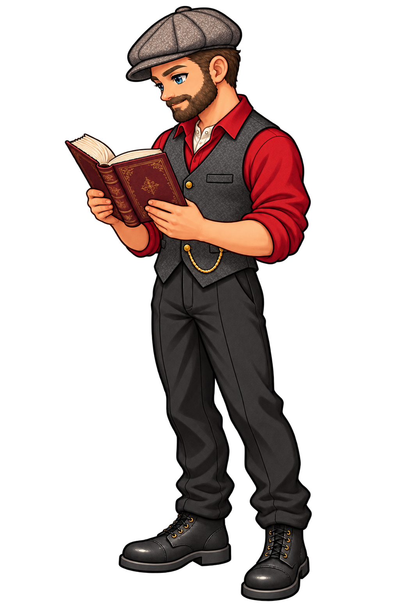
chris_standing_read_west_neutral.png
[1015, 1550] · alpha [0, 255] · height 1522 / 1564 · approved
West standing reading: body/boots left, book held in both hands ahead to left, gaze down, inner pages face reader; chain own left waist. Complete cap/boots. Pending artwork approval and shared export alignment. Furniture and runtime fit unverified.
Tier 3: standing_read_south
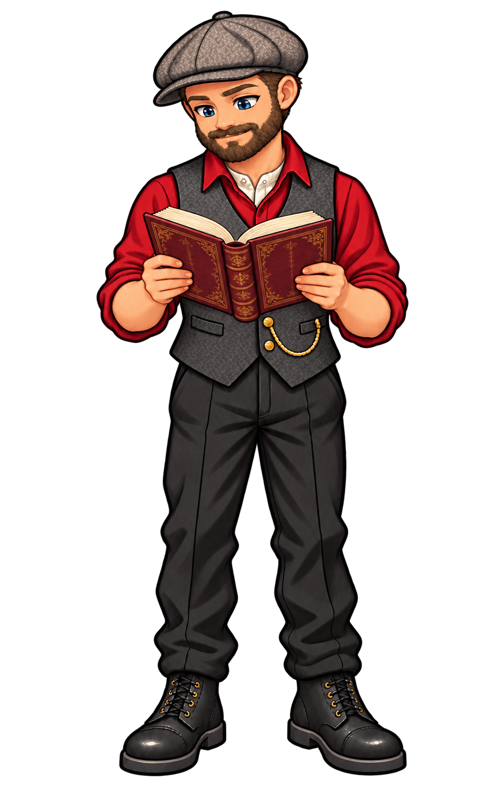
chris_standing_read_south_neutral.png
[986, 1596] · alpha [0, 255] · height 1522 / 1564 · approved
South open-book reading with book centered in both hands, gaze down, covers face camera while inner pages face reader; body/boots forward and chain anatomical left. Full cap/boots, pending artwork approval and runtime alignment. Furniture and runtime fit unverified.
Tier 3: standing_read_east
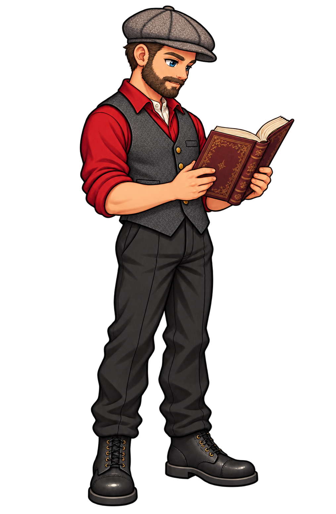
chris_standing_read_east_neutral.png
[1015, 1549] · alpha [0, 255] · height 1509 / 1564 · approved
East standing open-book reading: torso/boots right, gaze down to pages and both hands support covers; far-side chain occluded. Complete cap and boots. Pending artwork approval and runtime alignment. Furniture and runtime fit unverified.
Tier 3: standing_reach_table_west
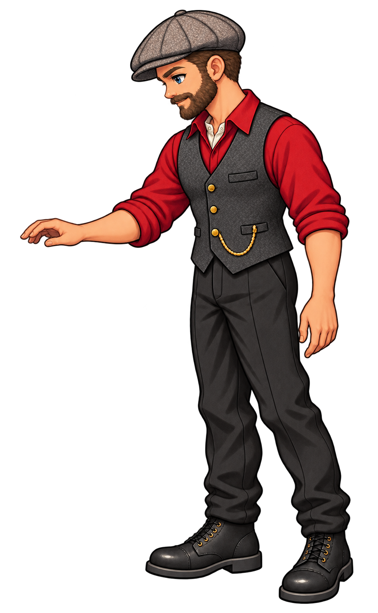
chris_standing_reach_table_west_neutral.png
[985, 1596] · alpha [0, 255] · height 1547 / 1564 · approved
West waist-height palm-down reach, gaze lowered to fingertips, opposite arm relaxed, torso and boots left, chain on near anatomical-left waist. Complete cap/boots. Artwork approval and table contact/export alignment pending. Furniture and runtime fit unverified.
Tier 3: standing_reach_table_south
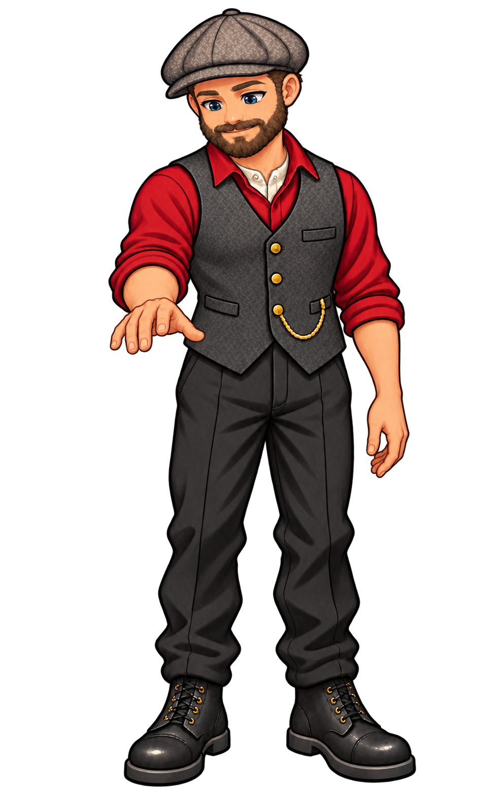
chris_standing_reach_table_south_neutral.png
[985, 1596] · alpha [0, 255] · height 1532 / 1564 · approved
South reaching right hand forward at waist height palm down with natural foreshortening, gaze toward fingers, other arm relaxed, body and boots forward. Chain screen-right anatomical left. Artwork approval and table contact pending. Furniture and runtime fit unverified.
Tier 3: standing_reach_table_east
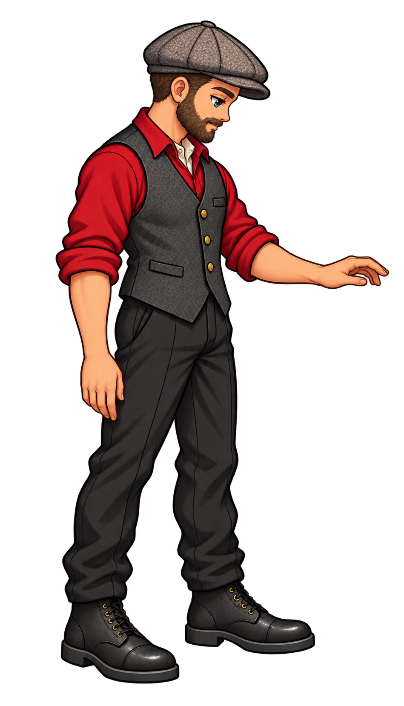
chris_standing_reach_table_east_neutral.png
[949, 1658] · alpha [0, 255] · height 1557 / 1564 · approved
East restrained waist-height reach, palm down curved fingers, eyes toward reaching hand and opposite arm relaxed. Torso and boot toes right; chain naturally occluded. Complete cap/boots. Actual table contact/export scale pending. Furniture and runtime fit unverified.
Tier 3: standing_look_up_west
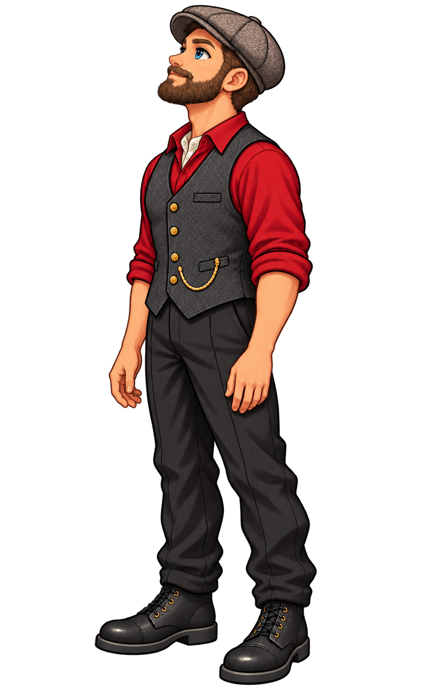
chris_standing_look_up_west_neutral.png
[985, 1597] · alpha [0, 255] · height 1569 / 1564 · approved
West gaze lifted above left, chest/pelvis and boot toes left, relaxed arms and anatomical-left near-side chain. Full cap and boots. Pending artwork approval, export alignment and runtime fit. Furniture and runtime fit unverified.
Tier 3: standing_look_up_south
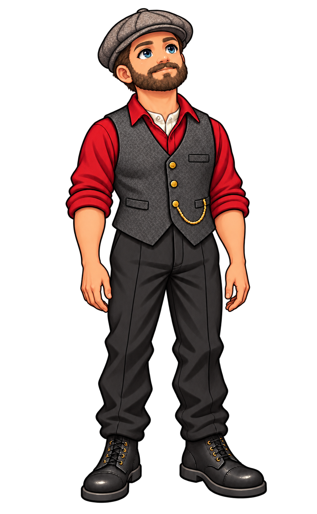
chris_standing_look_up_south_neutral.png
[985, 1596] · alpha [0, 255] · height 1536 / 1564 · approved
South body forward, chin and blue eyes lifted, calm focused closed mouth, arms naturally at sides and both boots planted. Cap and boots complete. Pending artwork approval, shared export alignment and runtime fit. Furniture and runtime fit unverified.
Tier 3: standing_look_up_north
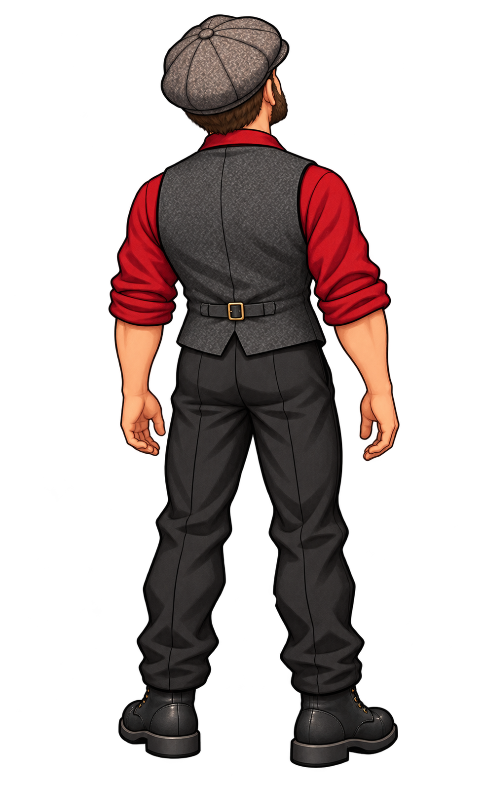
chris_standing_look_up_north_neutral.png
[985, 1596] · alpha [0, 255] · height 1526 / 1564 · approved
Rear-facing upward inspection: back visible, chin lifted with no eye/front face shown; arms relaxed, back strap and buckle retained, no rear chain. Full cap and boot heels. Pending artwork approval and runtime fit. Furniture and runtime fit unverified.
Tier 3: standing_look_up_east
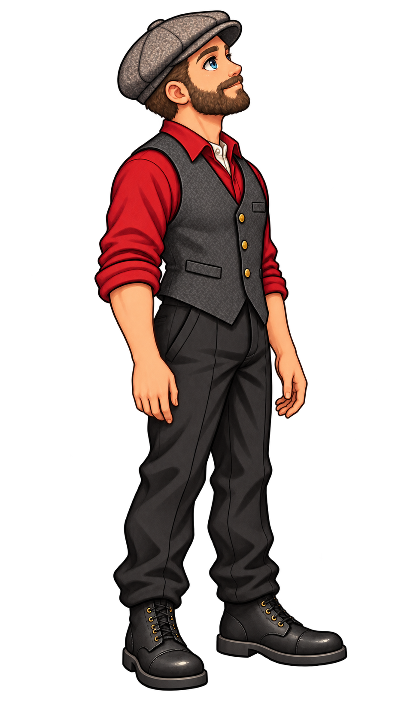
chris_standing_look_up_east_neutral.png
[948, 1659] · alpha [0, 255] · height 1583 / 1564 · approved
East gaze lifted upward, calm attentive expression, arms relaxed at sides, chest and boots toward right, far-side chain naturally occluded. Complete cap and boots; approval and runtime fit pending. Furniture and runtime fit unverified.
Tier 3: standing_lean_south
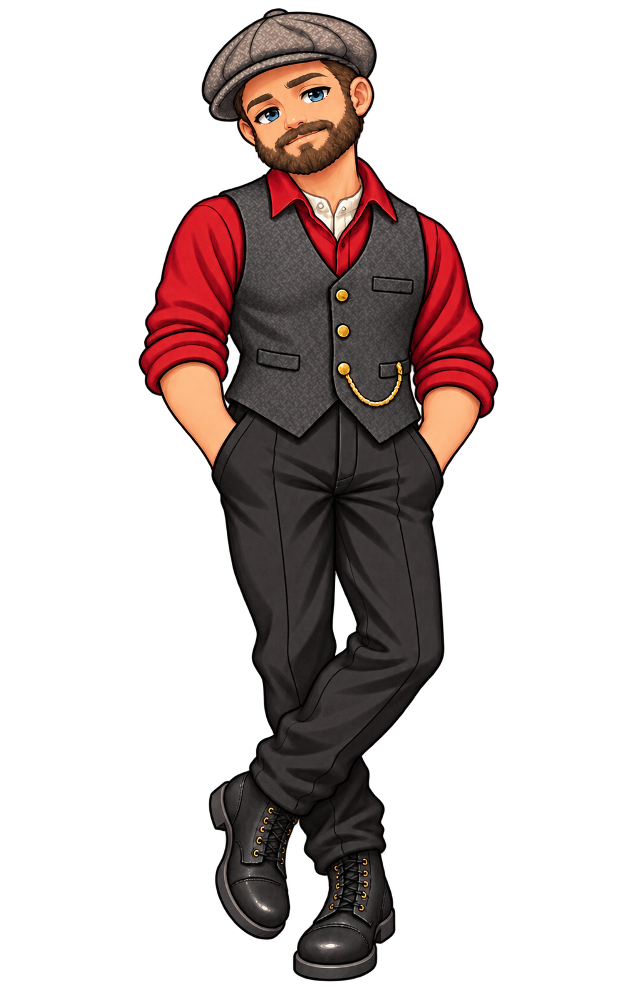
chris_standing_lean_south_resting.png
[985, 1596] · alpha [0, 255] · height 1553 / 1564 · approved
South wall-resting pose: shoulder/back lean, crossed ankles and hands naturally in front pockets, tired half-lowered eyes. Full cap and both boots. Actual wall contact/pivot alignment unverified; artwork approval pending. Furniture and runtime fit unverified.
Tier 3: standing_hold_book_east
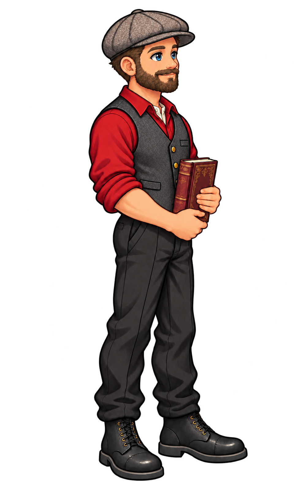
chris_standing_hold_book_east_neutral.png
[985, 1597] · alpha [0, 255] · height 1538 / 1564 · approved
East closed-book hold r2: incorrect near-side watch chain removed; anatomical-left chain occluded behind closed book. Pose and standing proportions retained. Complete cap and boots; pending user approval and runtime alignment. Furniture and runtime fit unverified.
Tier 3: standing_hold_book_west
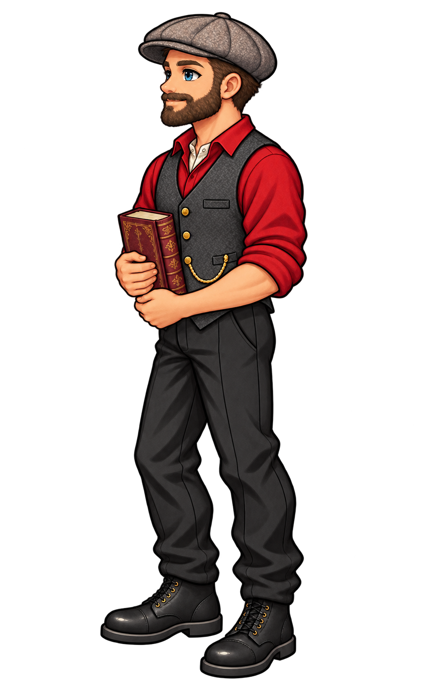
chris_standing_hold_book_west_neutral.png
[985, 1596] · alpha [0, 255] · height 1551 / 1564 · approved
West standing closed book held with two hands; torso and boots point left, anatomical-left chain on near waist. Full cap and boots. Pending user artwork approval and runtime scale verification. Furniture and runtime fit unverified.
Tier 3: standing_hold_book_south
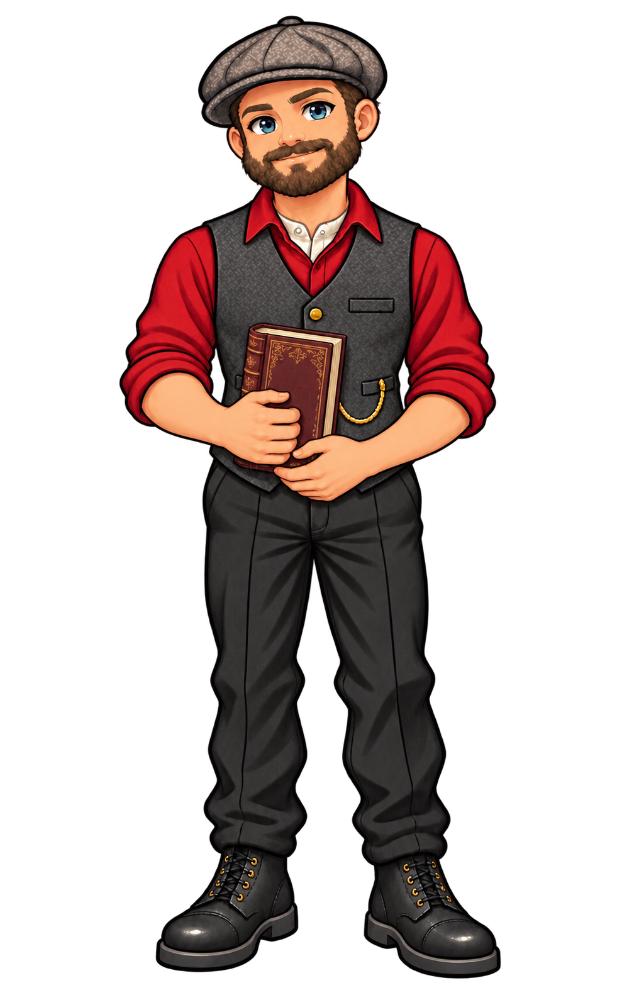
chris_standing_hold_book_south_neutral.png
[989, 1590] · alpha [0, 255] · height 1531 / 1564 · approved
South standing closed burgundy book held against abdomen by both hands; friendly neutral face, complete cap and boots, anatomical-left chain screen right. Artwork approval and runtime scale pending. Furniture and runtime fit unverified.
Tier 3: standing_hold_book_north
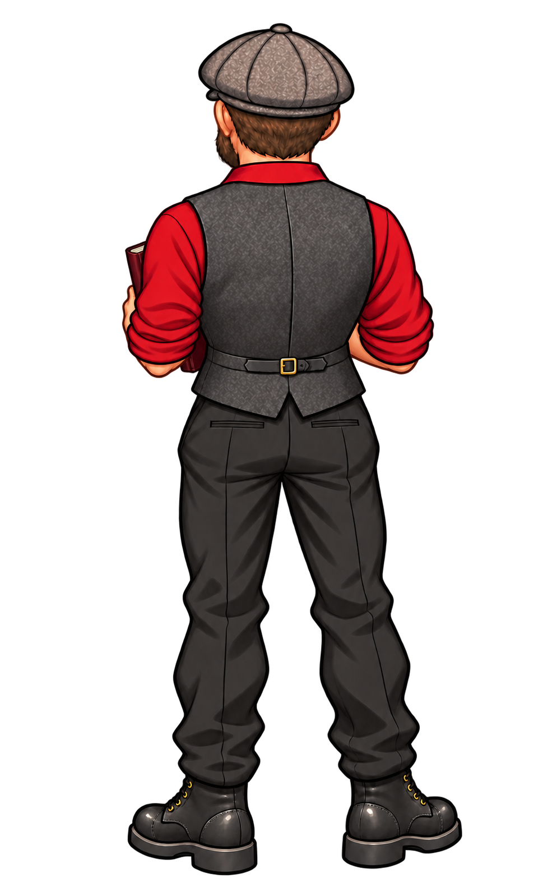
chris_standing_hold_book_north_neutral.png
[985, 1597] · alpha [0, 255] · height 1519 / 1564 · approved
Corrected single rear figure, elbows bent ahead holding mostly occluded closed book visible at left edge. Approved north idle proportions and adjustment strap retained. Pending user artwork approval; runtime fit unverified. Furniture and runtime fit unverified.
Tier 3: seated_sleep_east
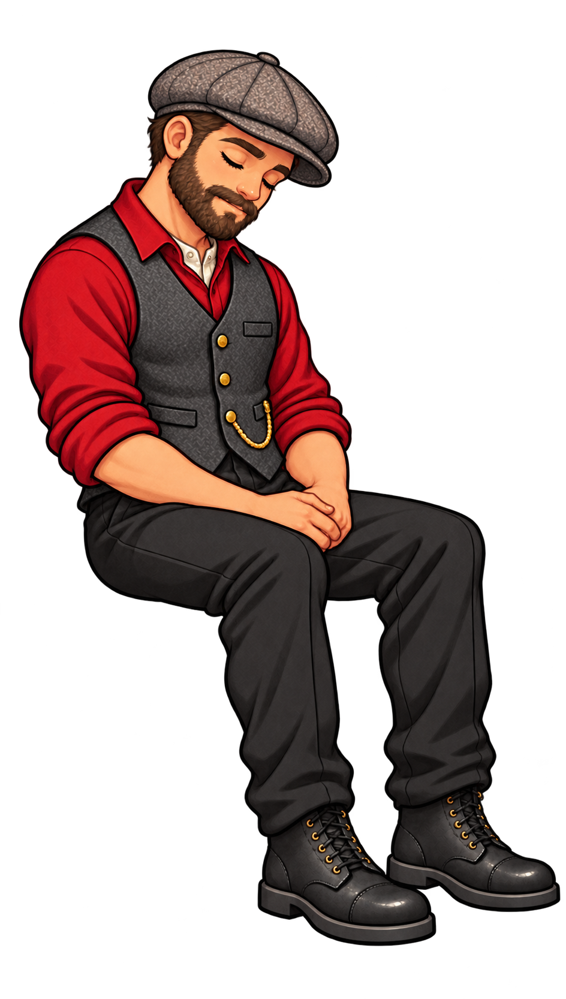
chris_seated_sleep_east_napping.png
[944, 1666] · alpha [0, 255] · height 1494 / 1564 · approved
Fresh clean-reference redraw removed broad halo. Eyes closed, head tilt, hands folded; uncrossed knees and boots project right, leg spacing differs from idle. User should review direction and spacing. Export scale, pelvis alignment and furniture fit unverified. Furniture and runtime fit unverified.
Tier 3: seated_sleep_west
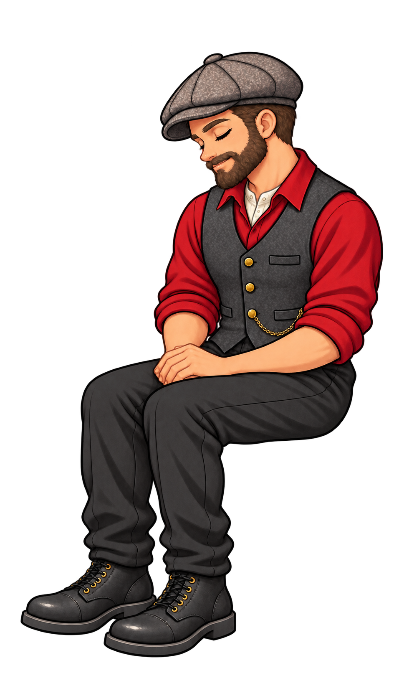
chris_seated_sleep_west_napping.png
[944, 1666] · alpha [0, 255] · height 1449 / 1564 · approved
West seated nap: eyes closed, relaxed head tilt and hands folded, uncrossed legs and planted boots to left. Furniture contact and export scale unverified; artwork approval pending. Furniture and runtime fit unverified.
Tier 3: seated_sleep_south
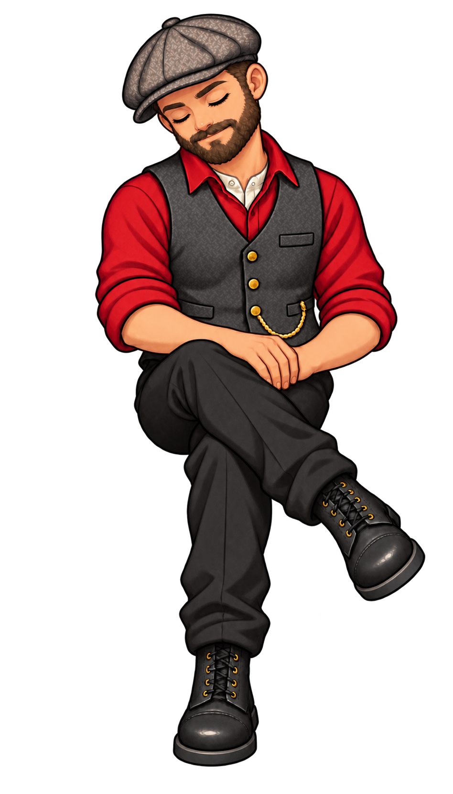
chris_seated_sleep_south_napping.png
[948, 1659] · alpha [0, 255] · height 1573 / 1564 · approved
South nap eyes closed and head tilted, hands relaxed in lap, original south idle crossed legs retained. Complete cap and boots. Export alignment and furniture fit unverified. Furniture and runtime fit unverified.
Tier 3: seated_read_west
chris_seated_read_west_neutral.png
[1080, 1456] · alpha [0, 255] · height 1402 / 1564 · approved
Matched Char west reading: uncrossed legs and boots toward left, book held in both hands and gaze down. Complete cap and boots. Pending artwork approval; furniture contacts and scale unverified. Furniture and runtime fit unverified.
Tier 3: seated_read_north
chris_seated_read_north_neutral.png
[1080, 1456] · alpha [0, 255] · height 1305 / 1564 · approved
Book corrected: both cream inner pages and center crease face reader/over-shoulder camera; burgundy exterior reduced to far-side edges. Seated pose preserved. Pending approval; runtime fit unverified. Furniture and runtime fit unverified.
Tier 3: seated_read_east
chris_seated_read_east_neutral.png
[1080, 1456] · alpha [0, 255] · height 1375 / 1564 · approved
Revised using matching Char east reading reference: torso and parallel uncrossed thighs face right, both boots planted right, head and eyes down to open book in both hands. Full cap and boots. Pending user approval; export scale and furniture fit unverified. Furniture and runtime fit unverified.
Tier 3: seated_idle_west
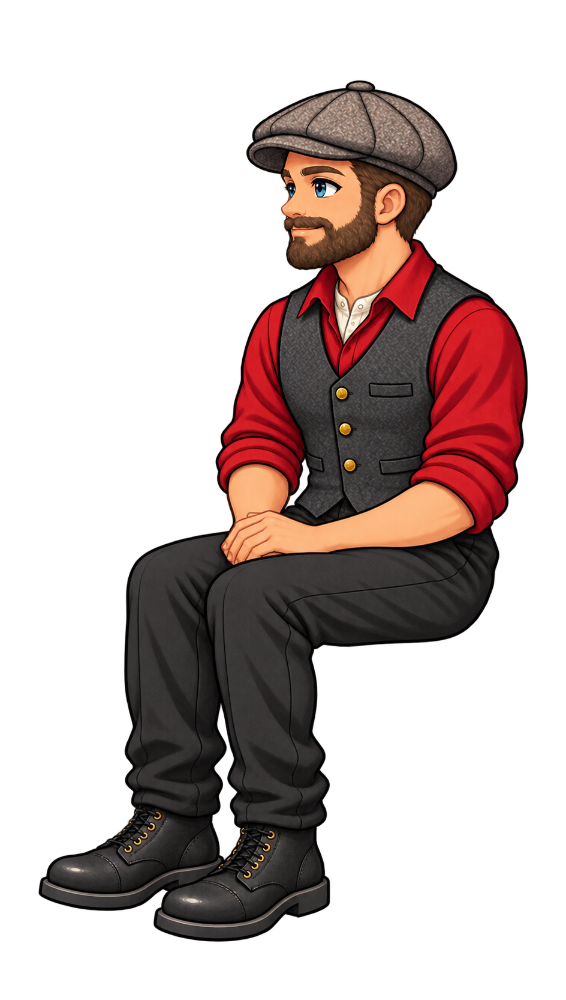
chris_seated_idle_west_neutral.png
[944, 1665] · alpha [0, 255] · height 1434 / 1564 · approved
Revised directly against Char west reference: uncrossed parallel thighs toward left, both boots planted left, hands together on lap. Direction closer to Char; user review pending. Scale and furniture fit unverified. Furniture and runtime fit unverified.
Tier 3: seated_idle_east
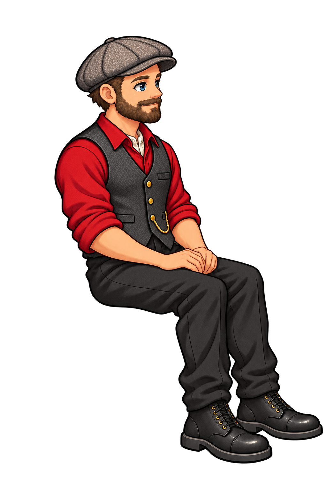
chris_seated_idle_east_neutral.png
[1024, 1536] · alpha [0, 254] · height 1338 / 1564 · approved
Direction revised using Char east reference: parallel thighs and planted boots toward right, uncrossed legs. Colored background halo remains; needs cleanup, not export ready. Furniture fit and scale unverified. Furniture and runtime fit unverified.
Tier 2: standing_fidget_north
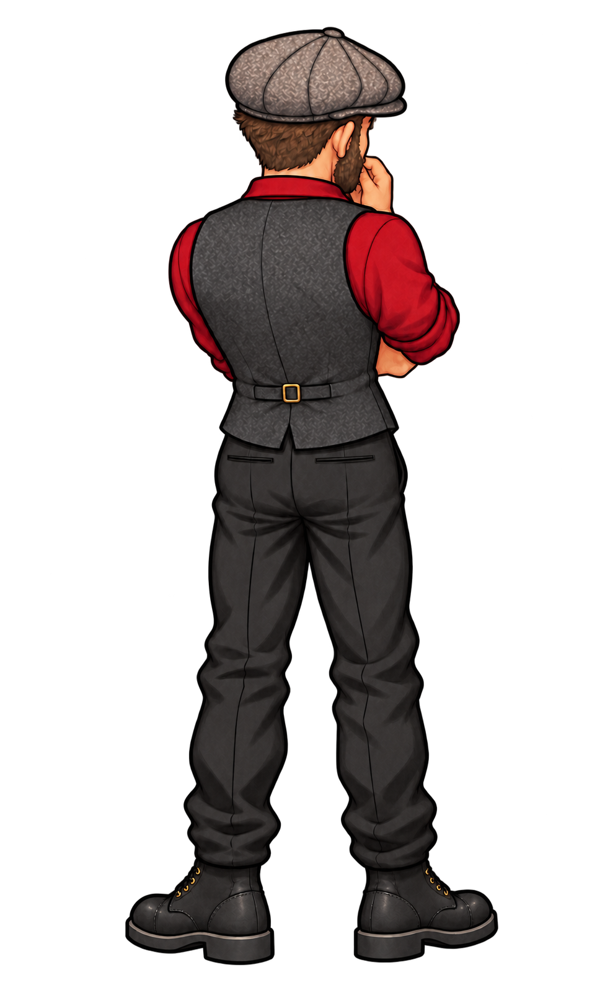
chris_standing_fidget_north_nervous.png
[976, 1611] · alpha [0, 255] · height 1512 / 1564 · approved
Corrected north nervous back view: rear welt pockets plain with invented buttons removed; mouth hand and opposite supporting forearm naturally partly occluded. Full cap and boots; pending user art approval. Furniture and runtime fit unverified.
Tier 2: standing_fidget_west
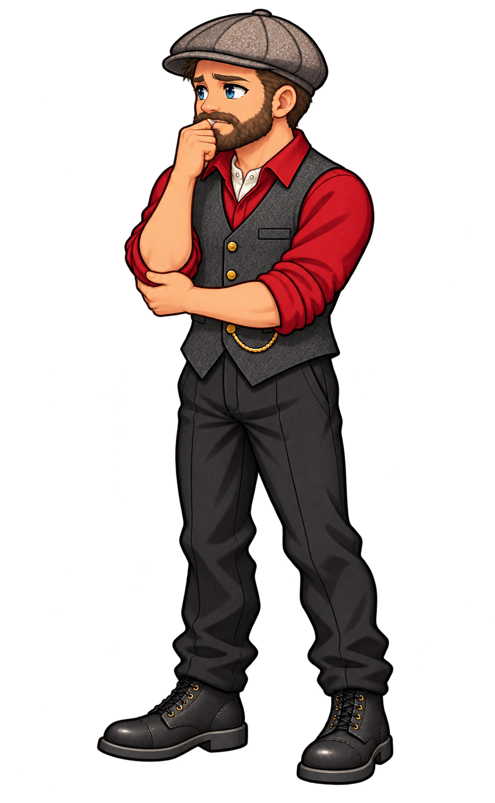
chris_standing_fidget_west_nervous.png
[986, 1596] · alpha [0, 255] · height 1543 / 1564 · approved
West nervous thumbnail variation redrawn with loose fist beneath mouth and raised thumb tip at teeth, opposite hand supporting elbow. User should confirm digit reads clearly at gameplay size. Complete cap and boots; pending approval. Furniture and runtime fit unverified.
Tier 2: standing_fidget_east
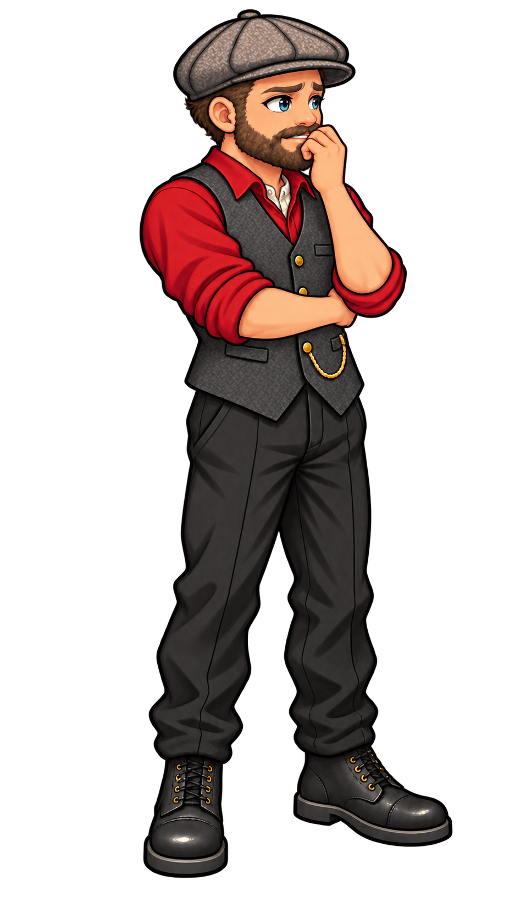
chris_standing_fidget_east_nervous.png
[957, 1644] · alpha [0, 255] · height 1581 / 1564 · approved
East anxious nail-biting with opposite forearm supporting elbow, concerned brow and sidelong eyes. Full cap and boots; pending art approval. Furniture and runtime fit unverified.
Tier 2: standing_clasp_hands_west
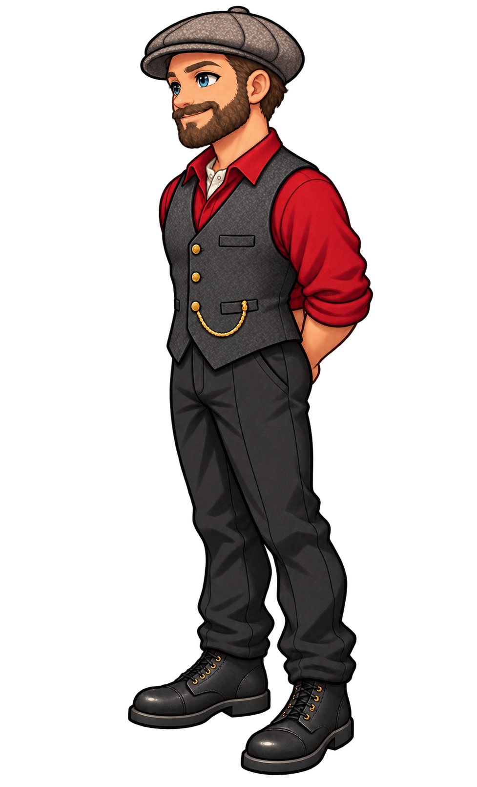
chris_standing_clasp_hands_west_friendly.png
[977, 1610] · alpha [0, 255] · height 1574 / 1564 · approved
West relaxed stance with arms behind lower back and naturally occluded clasp; friendly face. Full cap and boots; pending art approval. Furniture and runtime fit unverified.
Tier 2: standing_clasp_hands_south
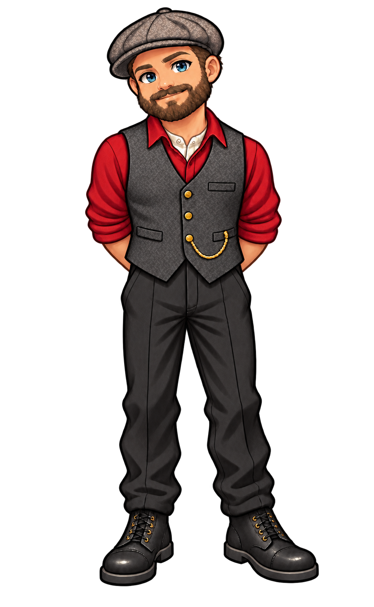
chris_standing_clasp_hands_south_friendly.png
[985, 1596] · alpha [0, 255] · height 1522 / 1564 · approved
South friendly stance with both arms naturally behind back and hands occluded, relaxed cheerful face. Full cap and boots; pending art approval. Furniture and runtime fit unverified.
Tier 2: standing_clasp_hands_east
chris_standing_clasp_hands_east_friendly.png
[976, 1611] · alpha [0, 255] · height 1544 / 1564 · approved
East relaxed hands-behind-back stance, cheerful face, natural arm occlusion behind hips. Full cap and boots; pending art approval. Furniture and runtime fit unverified.
Tier 1: standing_threaten_south
chris_standing_threaten_south_furious.png
[980, 1605] · alpha [0, 255] · height 1563 / 1564 · approved
South furious reveal with forward raised fist, second clenched fist, aggressive wide stance, angry brows and shouting mouth. Full cap and boots; pending user art approval. Furniture and runtime fit unverified.
Tier 1: standing_talk_north
chris_standing_talk_north_friendly.png
[984, 1599] · alpha [0, 255] · height 1512 / 1564 · approved
Revised north talking scale, true back view with open palm, front-pocket resting hand and empty rear pockets. Cap and boots complete; pending art approval. Furniture and runtime fit unverified.
Tier 1: standing_talk_west
chris_standing_talk_west_friendly.png
[973, 1617] · alpha [0, 255] · height 1540 / 1564 · approved
West side-facing conversation, open explanatory palm, other hand in front pocket, friendly open mouth. Full cap and boots; pending art review. Furniture and runtime fit unverified.
Tier 1: standing_talk_south
chris_standing_talk_south_friendly.png
[984, 1599] · alpha [0, 255] · height 1525 / 1564 · approved
South friendly conversation, open palm and relaxed other hand in front pocket, smiling face. Whole cap and boots; pending user approval. Furniture and runtime fit unverified.
Tier 1: standing_talk_east
chris_standing_talk_east_friendly.png
[984, 1599] · alpha [0, 255] · height 1509 / 1564 · approved
East friendly conversation, one hand open palm-up and other in front pocket; relaxed face. Complete cap and boots; pending art approval. Furniture and runtime fit unverified.
Tier 1: standing_startle_west
chris_standing_startle_west_surprised.png
[976, 1612] · alpha [0, 255] · height 1536 / 1564 · approved
Revised whole-body west side stance with both boot toes left, bent knees, raised hands and surprised face. Cap and boots complete; pending art approval. Furniture and runtime fit unverified.
Tier 1: standing_startle_south
chris_standing_startle_south_surprised.png
[984, 1598] · alpha [0, 255] · height 1534 / 1564 · approved
South startled recoil with wide blue eyes, open mouth, both hands raised asymmetrically and bent knees. Full cap and boots. Pending user art review. Furniture and runtime fit unverified.
Tier 1: standing_startle_east
chris_standing_startle_east_surprised.png
[978, 1608] · alpha [0, 255] · height 1538 / 1564 · approved
East startled reaction, wide eyes and open mouth, both hands raised with naturally curled fingers, staggered stance. Complete cap and boots. Pending art review. Furniture and runtime fit unverified.
Tier 1: standing_deny_west
chris_standing_deny_west_defensive.png
[971, 1620] · alpha [0, 255] · height 1532 / 1564 · approved
User approved revised outward-palm denial artwork. Export alignment and runtime fit remain pending.
Tier 1: standing_deny_east
chris_standing_deny_east_defensive.png
[989, 1591] · alpha [0, 255] · height 1549 / 1564 · approved
User approved revised outward-palm denial artwork. Export alignment and runtime fit remain pending. East corner alpha=1 cleanup flag remains; source pixels unchanged.
Tier 1: standing_deny_south
chris_standing_deny_south_defensive.png
[977, 1610] · alpha [0, 255] · height 1532 / 1564 · approved
User approved revised outward-palm denial artwork. Export alignment and runtime fit remain pending.
Tier 1: standing_shrug_south
chris_standing_shrug_south_resigned.png
[979, 1606] · alpha [0, 255] · height 1530 / 1564 · approved
User-directed defeated resignation revision: no smile, downturned mouth, heavy lowered gaze, drooping head and shoulders, low limp palms-up gesture. Full cap and boots retained; pending user approval. Furniture and runtime fit unverified.
Tier 1: standing_look_down_east
chris_standing_look_down_east_neutral.png
[980, 1605] · alpha [0, 255] · height 1533 / 1564 · approved
Revised east inspection drawing scale; lowered chin and downward gaze with relaxed hanging arms. Whole cap and boots visible; pending user art review. Furniture and runtime fit unverified.
Tier 1: standing_look_down_west
chris_standing_look_down_west_neutral.png
[985, 1596] · alpha [0, 255] · height 1506 / 1564 · approved
West-facing inspection with lowered chin, downward gaze and relaxed arms. Complete cap and boots; pending user art review. Furniture and runtime fit unverified.
Tier 1: standing_look_down_south
chris_standing_look_down_south_neutral.png
[984, 1599] · alpha [0, 255] · height 1518 / 1564 · approved
South inspection pose with lowered chin and gaze, relaxed hanging hands, upright shoulders. Complete cap and boots; pending user art review. Furniture and runtime fit unverified.
Tier 1: standing_laugh_south
chris_standing_laugh_south_evil.png
[977, 1610] · alpha [0, 255] · height 1550 / 1564 · approved
South evil laugh with head tipped back, narrowed blue eyes, open laugh, one hand on lapel and other on hip. Full cap and boots. Pending user art review. Furniture and runtime fit unverified.
Tier 1: crouching_cry_south
chris_crouching_cry_south_remorseful.png
[1222, 1287] · alpha [0, 255] · height 1192 / 1564 · approved
South-facing deep crouch with both elbows on bent knees and hands holding head over retained cap; closed anguished eyes, streaming tears and open sobbing mouth. Complete boots and silhouette. Native drawing scale differs from standing reference and requires export calibration; no scale-fit claim. Furniture and runtime fit unverified.
Tier 1: standing_cross_arms_west
chris_standing_cross_arms_west_suspicious.png
[986, 1596] · alpha [0, 255] · height 1534 / 1564 · approved
Revised west three-quarter side stance, folded arms and skeptical brow. Full cap and boots visible; requires user art review. Furniture and runtime fit unverified.
Tier 1: standing_cross_arms_north
chris_standing_cross_arms_north_suspicious.png
[986, 1596] · alpha [0, 255] · height 1519 / 1564 · approved
Inspected back-oblique north folded-arms silhouette; hands largely occluded at front, cap and waistcoat back retained. Small cheek/beard silhouette visible at left; no front-facing eyes. Complete boots and no obvious extra limbs. Furniture and runtime fit unverified.
Tier 1: standing_cross_arms_east
chris_standing_cross_arms_east_suspicious.png
[976, 1611] · alpha [0, 255] · height 1540 / 1564 · approved
Inspected east three-quarter folded arms, skeptical brows and closed mouth; identity and gray cap/red shirt/charcoal vest retained. Both shoes visible, no obvious extra limbs. Furniture and runtime fit unverified.
Tier 1: standing_idle_north
chris_standing_idle_north_neutral.png
[984, 1599] · alpha [0, 255] · height 1516 / 1564 · approved
User approved north idle r3 after front-pocket hand correction. Runtime fit unverified.
Tier 1: standing_accuse_south
chris_standing_accuse_south_defiant.png
[985, 1596] · alpha [0, 255] · height 1526 / 1564 · approved
Inspected defiant pointing: foreshortened index finger toward viewer, opposite clenched hand, firm brows. Cap/outfit/identity retained; no obvious extra limbs or cropping. Furniture and runtime fit unverified.
Tier 1: standing_idle_west
chris_standing_idle_west_neutral.png
[985, 1597] · alpha [0, 255] · height 1524 / 1564 · approved
Inspected: independent west-facing head/chest/feet, hands in pockets, gray cap and red shirt retained. Near-side gold chain visible; complete boots, no obvious extra limbs. Furniture and runtime fit unverified.
Tier 1: standing_idle_east
chris_standing_idle_east_neutral.png
[977, 1610] · alpha [0, 255] · height 1528 / 1564 · approved
Inspected: eastward face/chest/boots, both hands in pockets, complete cap and boots. Approved identity/costume retained; watch chain is visible on the far front panel through three-quarter angle. Source canvas alignment pending. Furniture and runtime fit unverified.
Tier 2: standing_fidget_south
chris_standing_fidget_south_nervous.png
[969, 1624] · alpha [0, 255] · height 1539 / 1564 · approved
Photo-guided r2 inspected: lower forearm supports raised elbow, curled hand at mouth, sideways anxious glance. Cap and approved anime identity retained. Earlier hand-on-hip draft marked changes requested. Furniture and runtime fit unverified.
Tier 1: standing_cross_arms_south
chris_standing_cross_arms_south_suspicious.png
[978, 1608] · alpha [0, 255] · height 1543 / 1564 · approved
Inspected full-body render: folded arms and skeptical face read clearly; cap, red shirt, charcoal waistcoat, chain and black boots match model. No obvious extra limbs or cropping. Fingers partly occluded by folded arms. Furniture and runtime fit unverified.